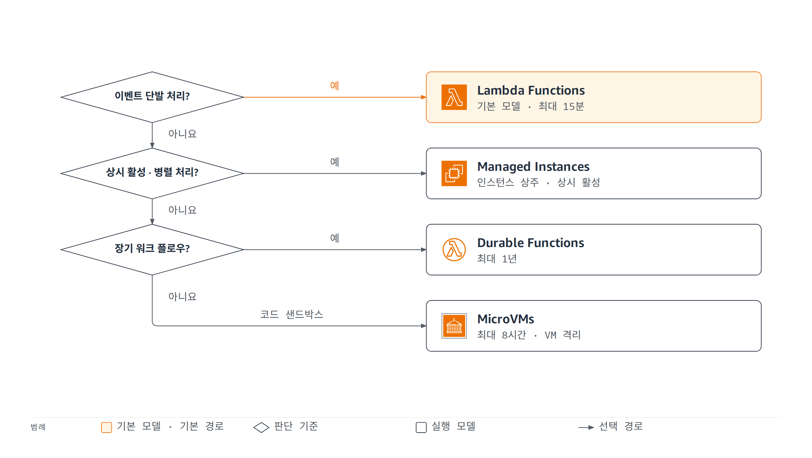
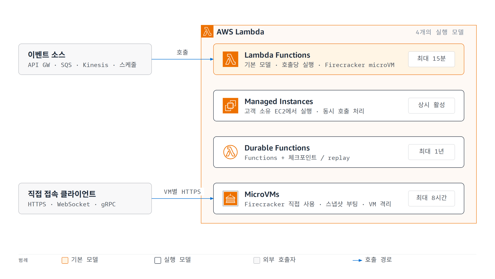

15분 한도를 넘는 워크 플로우, freeze 동작이 맞지 않는 상시 트래픽, 사용자나 AI가 생성한 코드의 실행을 Lambda 안에서 어떻게 풀지 묻는 글입니다. 이벤트 단발 처리는 기본 Functions에서 시작하고 상시 병렬 처리는 Managed Instances, 장기 워크 플로우는 Durable Functions, 코드 샌드박스는 MicroVMs를 검토합니다. Managed Instances의 타임아웃 동작, Durable Functions와 MicroVMs의 상향 불가 한도처럼 설계 단계에서 먼저 확인할 제약도 함께 정리합니다.This post asks how to handle, within Lambda, workflows that exceed the 15-minute limit, constant traffic that does not suit freeze behavior, and the execution of user- or AI-generated code. Start with standard Lambda functions for one-off event processing, and consider Managed Instances for always-on parallel processing, durable functions for long-running workflows, and MicroVMs for code sandboxes. It also covers the constraints to check first at the design stage, such as the timeout behavior of Managed Instances and the limits of durable functions and MicroVMs that cannot be increased.
Lambda로 서버리스 워크로드를 설계하다 보면 비슷한 고민을 반복해서 만나게 됩니다. 15분 한도를 넘는 장기 워크 플로우는 어떻게 처리할지, 호출 사이에 실행 환경이 멈추는 freeze(일시 정지) 동작이 상시 트래픽 서비스에 맞는지, 사용자나 AI가 생성한 코드를 어디서 안전하게 실행할지 같은 질문입니다. 지금까지는 이 답을 Lambda 외부에서 찾는 경우가 많았습니다. 워크 플로우는 AWS Step Functions로 옮기고 상시 워크로드는 컨테이너로 다시 만들고 코드 샌드박스(Code Sandbox)는 별도 인프라로 직접 구축하는 식이었습니다.
2026년 8월 현재 Lambda라는 이름 아래에는 서로 다른 실행 모델 4가지가 있습니다. 우리가 알던 호출당 실행 모델은 그중 하나인 Lambda Functions입니다. 여기에 Lambda Managed Instances, Lambda Durable Functions, Lambda MicroVMs가 더해지면서 실행 한도는 15분에서 최대 1년까지 벌어졌습니다. 이 글에서는 실행 모델 4종의 구조 차이를 먼저 비교하고 이어서 기본 함수 내부의 설정 항목과 한도를 AWS 공식 문서 기준으로 정리합니다. 마지막에는 워크로드 성격에 따라 어느 모델에서 시작할지 판단하는 기준을 제시합니다. 본문의 수치와 기본값은 2026년 8월 기준입니다.
4가지 모델은 이름만 나란할 뿐 실행 단위와 격리 수준부터 다릅니다. 실행 단위, 최대 지속 시간, 격리, 상태 유지, 주 용도의 5가지 기준으로 놓고 보면 차이가 분명해집니다.
| 모델 | 실행 단위 | 최대 지속 | 격리 | 상태 유지 | 주 용도 |
|---|---|---|---|---|---|
| Lambda Functions (기본) | 호출(invocation) | 15분 | Firecracker microVM (관리형) | 보장 없음 (웜 재사용 시 /tmp, 전역 변수 유지) | 이벤트 기반 단발 처리 |
| Lambda Managed Instances | 고객 소유 EC2 인스턴스 | 인스턴스 상주 | 컨테이너 | 환경 상주 | 상시 활성, 병렬 처리 워크로드 |
| Lambda Durable Functions | durable execution | 최대 1년 | 기본 Lambda와 동일 | 체크포인트 | 다단계 워크 플로우, AI 오케스트레이션 |
| Lambda MicroVMs | MicroVM 인스턴스 | 8시간 | VM 수준 (Firecracker 직접) | 메모리, 디스크 스냅샷 | 사용자나 AI가 생성한 코드의 샌드박스 |
표 1. Lambda 실행 모델 4종 비교 (2026년 8월 기준)
01
Lambda Functions는 우리가 알던 Lambda입니다. 이벤트가 도착하면 호출 단위로 실행되고 호출 사이에는 실행 환경이 freeze됩니다. 격리는 Firecracker가 담당합니다. Firecracker는 Lambda의 격리 계층을 맡아 온 경량 microVM 가상화 기술입니다. freeze된 환경이 다음 호출에 재사용되면 /tmp 디렉토리와 핸들러 밖 전역 변수 상태가 그대로 남아 있습니다. 초기화 코드에서 DB 커넥션을 만들어 두고 재사용하는 최적화가 성립하는 이유가 여기에 있습니다. 다만 실행 환경은 수 시간 주기로 교체되므로, 호출 간 상태 유지를 보장으로 가정해서는 안 됩니다.
Lambda Managed Instances는 코드를 고객 소유 Amazon EC2 인스턴스에서 실행하고 Lambda는 운영만 담당합니다. 실행 환경이 freeze되지 않고 계속 활성 상태로 남으며 한 환경 안에서 여러 호출이 동시에 실행됩니다. 상시 활성, 병렬 처리 워크로드가 대상입니다.
Lambda Durable Functions는 durable execution, 즉 체크포인트를 남기고 중단 지점부터 이어가는 실행 방식을 Lambda에 추가합니다. 체크포인트와 replay 메커니즘 덕분에 하나의 실행이 최대 1년까지 이어집니다. 다단계 워크 플로우와 AI 오케스트레이션이 주 용도입니다.
Lambda MicroVMs는 Firecracker를 프리미티브로 직접 노출합니다. 핸들러와 이벤트 모델 대신 MicroVM마다 부여되는 전용 HTTPS 엔드포인트에 직접 접속하는 방식이라 기존 Lambda와는 사고방식 자체가 다릅니다. 사용자나 AI가 생성한 코드를 VM 수준으로 격리하는 샌드박스가 주 용도입니다.
모델 선택의 출발점은 워크로드 성격입니다. 이벤트 단발 처리라면 기본 Functions에서 시작하고 상시 병렬 처리, 장기 워크 플로우, 코드 샌드박스에 해당할 때만 나머지 모델을 검토합니다.

4가지 모델이 완전히 배타적인 것은 아닙니다. AWS 문서에서는 Durable Functions를 checkpoint와 replay 메커니즘을 사용하는 일반 Lambda 함수(regular Lambda functions)로 설명합니다. 별도 인프라 없이 기본 Functions 위에서 동작하는 실행 모드라는 뜻입니다. 반면 Managed Instances나 MicroVMs와 Durable Functions를 조합할 수 있는지는 작성 시점의 공식 문서에 언급이 없어 이 글에서는 단정하지 않습니다.
02
Managed Instances는 코드를 고객 소유 EC2 인스턴스에서 실행하고 운영은 Lambda가 맡는 모델입니다. 같은 함수 코드를 올려도 실행 환경의 동작이 기본 Lambda와 근본적으로 다르기 때문에, 이 차이를 모른 채 기존 함수를 그대로 옮기면 예상치 못한 부작용을 만나게 됩니다.
기본 Lambda는 호출이 끝나면 실행 환경을 freeze하지만 Managed Instances의 실행 환경은 freeze 없이 계속 활성 상태로 남습니다. 호출 사이에도 실행 환경이 멈추지 않고 계속 동작한다는 뜻입니다.
호출 처리 방식도 다릅니다. 한 실행 환경 안에서 여러 호출이 런타임 워커별로 동시에 실행됩니다. 실행 환경 1개가 동시 호출 1건을 처리한다는 기본 Lambda의 등식이 여기서는 성립하지 않습니다.
주의: 호출 사이의 격리가 사라집니다
기본 Lambda에서는 실행 환경 1개가 동시 호출 1건만 처리하고 환경 자체가 Firecracker microVM으로 격리됩니다. 반면 Managed Instances에서는 동시 호출들이 같은 컨테이너의 프로세스 공간을 런타임 워커 단위로 나눠 사용합니다. 전역 변수 오염, 스레드 안전성, 한 호출의 메모리 누수가 다른 호출로 번지는 문제가 마이그레이션 시 새로 검토해야 하는 항목이 됩니다. AWS 문서에서도 스레드 안전성, 상태 관리, 컨텍스트 격리를 이 실행 모델에서는 다르게 다뤄야 한다고 명시합니다.
타임아웃은 호출별로 독립 적용됩니다. 한 호출이 타임아웃되어도 같은 환경의 다른 호출은 영향 없이 계속 실행됩니다.
주의: 타임아웃이 발생해도 코드는 종료되지 않습니다
Managed Instances에서 호출이 타임아웃되면 Lambda는 호출자에게 에러를 반환하지만 코드는 강제 종료되지 않고 백그라운드에서 계속 실행됩니다. 코드에서 context의 잔여 시간을 직접 확인해 중단하지 않으면, 이미 실패로 처리된 호출이 뒤늦게 완료되어 중복 쓰기나 중복 알림 같은 부작용을 만듭니다. 기본 Lambda 함수를 마이그레이션할 때 반드시 인지해야 하는 차이입니다.
과부하 상황의 동작도 다릅니다. Managed Instances는 backpressure, 즉 처리 용량을 넘는 요청을 쌓아 두는 대신 앞단에서 거부하는 방식을 사용합니다. 런타임 워커가 전부 바쁘면 신규 요청은 거부됩니다.
에러 처리 정책은 단순합니다. 실행 환경에 에러가 나면 Lambda는 리셋이나 복구를 시도하지 않고 컨테이너를 폐기한 뒤 새것으로 교체합니다. 실행 환경 안에 상태를 오래 쌓아 두는 설계에는 이 폐기 정책이 그대로 제약이 됩니다.
한도 몇 가지는 기본 Lambda보다 넉넉합니다. 초기화는 최대 15분까지 허용되고 파일 디스크립터 한도는 4,096개로 기본 Lambda의 1,024개보다 큽니다. 실행 환경 OS는 Bottlerocket 기반입니다. 리전 제공 범위는 서울을 포함한 모든 상용 리전이며 텔아비브, 바레인, UAE, 오클랜드 4곳만 예외입니다.
스케일링은 최소와 최대 실행 환경 설정 안에서 리소스 사용 신호에 따라 자동으로 이루어집니다. 다만 자동 scale-to-zero는 없습니다. 트래픽이 없어도 설정된 최소 실행 환경(기본 3개)까지만 줄어듭니다. 최소와 최대를 모두 0으로 지정하면 함수가 비활성화되고 기반 인스턴스가 종료되는데, 이후 트래픽이 와도 자동으로 복귀하지 않으므로 0이 아닌 값으로 다시 설정해야 합니다. 2026년 5월 12일부터는 Amazon EventBridge Scheduler로 일회성 또는 반복 일정을 정의해 용량 한도를 사전에 조정하는 스케줄 기반 스케일링도 사용할 수 있습니다.
과금 구조 역시 기본 Lambda와 다릅니다. 요청 100만 건당 USD 0.20의 요청 요금에, 프로비저닝된 EC2 인스턴스 요금과 EC2 온디맨드 가격의 15%에 해당하는 관리 수수료가 더해집니다. 호출별 실행 시간 과금은 없는 대신, 표 1의 인스턴스 상주가 뜻하는 대로 트래픽이 없어도 인스턴스가 떠 있는 동안에는 계속 과금됩니다. EC2 Savings Plans와 예약 인스턴스 할인은 기반 EC2 요금에만 적용되고 관리 수수료에는 적용되지 않습니다.
03
Durable Functions는 실행 도중 체크포인트를 남기고 중단되면 그 지점부터 이어가는 durable execution을 Lambda 함수 안에 구현한 모델입니다. 이 메커니즘 덕분에 하나의 실행이 15분 한도를 넘어 최대 1년까지 이어집니다.
개발자가 사용하는 프리미티브는 2개입니다. step은 재시도와 진행 추적이 내장된 비즈니스 로직 단위이고 wait는 과금 없이 실행을 중단해 두는 대기입니다. 긴 승인 대기나 외부 이벤트 대기를 wait로 처리하면 그 시간에는 요금이 발생하지 않습니다.
실행이 재개되면 코드는 처음부터 다시 실행됩니다. 다만 이미 완료된 step은 저장된 체크포인트 결과로 건너뛰는데, 이 재실행 방식을 replay라고 부릅니다.
참고: replay가 요구하는 결정론
replay는 같은 코드를 다시 실행하면 같은 경로를 지나간다는 전제 위에 서 있습니다. 따라서 함수는 결정론적이어야 합니다. 실행할 때마다 값이 달라지는 로직이 섞이면 재개 시점의 실행 경로가 원래 실행과 달라질 수 있습니다.
SDK는 JavaScript, TypeScript, Python, Java를 지원하고 현행 개발자 안내서에는 C#(.NET)용 SDK도 올라와 있습니다. 워크 플로우를 별도 DSL 없이 이 언어들의 일반 코드로 그대로 쓴다는 점이 이 모델의 핵심입니다. 다만 활성화 가능한 런타임에는 하한이 있습니다. 2026년 4월 22일 공지 기준 Python 3.13과 3.14, Node.js 22와 24, Java 17 이상 기반 함수에서 durable execution을 켤 수 있습니다. Python 3.11처럼 그보다 낮은 버전에서 실행되던 기존 함수는 런타임 업그레이드가 먼저입니다. 관리형 런타임에 없는 버전이 필요하면 OCI 컨테이너 이미지 기반으로도 durable 함수를 만들 수 있습니다.
다단계 워크 플로우에는 이미 AWS Step Functions가 있습니다. 표 2는 2가지 선택지를 실행 위치와 정의 방식, 사용 예로 비교합니다.
| 기준 | Lambda Durable Functions | Step Functions |
|---|---|---|
| 실행 위치 | Lambda 함수 안 | 독립 서비스 |
| 워크 플로우 정의 | 일반 프로그래밍 언어 코드 | 그래프 DSL, 비주얼 디자이너 |
| 권장 사용 예 | 워크 플로우가 비즈니스 로직과 밀결합일 때 | 220개 이상 서비스 통합과 무보수 운영이 필요할 때 |
표 2. Durable Functions와 Step Functions 선택 기준
정리하면 워크 플로우가 애플리케이션 코드와 한 몸으로 움직이고 개발 언어 안에서 표현하는 편이 자연스럽다면 Durable Functions가 어울립니다. 여러 AWS 서비스를 엮는 오케스트레이션을 코드 배포 없이 시각적으로 운영하고 싶다면 Step Functions가 어울립니다.
총량 한도부터 보면, 동시에 실행 중인 durable execution은 리전당 기본 500만 건이며 버지니아, 오레곤, 아일랜드 3곳만 1,000만 건입니다. 실행당 durable operation은 3,000개, 실행당 영속 데이터는 100MB인데 이 2가지 한도는 상향 신청이 불가능합니다.
진입 속도에도 한도가 있습니다. durable execution을 시작하는 함수 호출 속도는 리전당 300 RPS이며 상향 요청이 가능합니다. 주문이나 결제처럼 요청 하나가 실행 하나를 시작하는 흐름이라면 리전당 500만 건보다 이 진입 상한에 먼저 걸립니다. 실행 이력을 조회하는 GetDurableExecutionHistory와 ListDurableExecutionsByFunction 같은 관측 API도 각 15 RPS라 대시보드 폴링 주기도 설계 변수에 들어갑니다.
상향 불가 한도는 운영이 아니라 설계 단계의 제약입니다. durable operation 수가 3,000개에 근접하는 워크 플로우라면 실행 분할을 설계에서 고려해야 합니다.
04
MicroVMs는 Lambda의 격리 계층이던 Firecracker를 프리미티브로 직접 노출하는 모델입니다. 2026년 6월 버지니아, 오하이오, 오레곤, 아일랜드, 도쿄 5개 리전에서 정식 출시되었고 같은 해 8월 뭄바이, 싱가포르, 시드니, 프랑크푸르트, 스톡홀름이 더해져 총 10개 리전에서 제공됩니다. (서울 리전은 아직 대상이 아닙니다.) 핸들러와 이벤트라는 기존 Lambda의 사고방식이 여기서는 적용되지 않습니다. MicroVM마다 전용 HTTPS 엔드포인트가 부여되고 애플리케이션에 HTTPS, WebSocket, gRPC로 직접 접속합니다.
배포 파이프라인은 Dockerfile에서 출발합니다. Dockerfile로 이미지를 정의하면 빌드, 앱 초기화, 스냅샷 생성까지 Lambda가 수행합니다. 실행 시에는 이 스냅샷에서 부팅하므로 의존성이 모두 로드된 상태로 즉시 시작됩니다.
실행 중인 MicroVM은 idle 정책에 따라 자동으로 suspend됩니다. suspend 동안에는 메모리와 디스크 상태가 보존된 채 스토리지 요금만 발생하고 다시 필요해지면 자동으로 resume됩니다.
주의: 스냅샷은 모든 MicroVM이 공유합니다
이미지에 포함된 값은 그 스냅샷에서 부팅하는 모든 MicroVM이 그대로 공유합니다. 고유 ID, 시크릿, 랜덤 시드는 이미지에 넣지 말고 MicroVM 시작 후에 생성해야 하며 자격 증명과 네트워크 연결도 시작 후에 재수립해야 합니다. 이 처리는 lifecycle hook에서 수행합니다.
기본 리소스는 메모리 2GB에 1vCPU이고 베이스라인은 최대 8GB와 4vCPU까지 설정할 수 있습니다. 부하가 오르면 베이스라인의 4배까지 자동으로 수직 확장되어 피크 기준 32GB, 16vCPU에 이릅니다. 메모리와 vCPU 비율은 2:1로 고정이고 아키텍처는 ARM64입니다.
과금은 baseline-plus-consumption 방식입니다. 베이스라인 용량을 평균 사용량에 맞춰 두고 이를 넘는 초과분은 실제로 사용할 때만 과금됩니다.
네트워크 연결은 방향에 따라 2가지 기능으로 나뉩니다. MicroVM에서 VPC로 나가는 아웃바운드는 Lambda Network Connector(LNC)라는 신규 리소스로 연결합니다. 반대로 VPC에서 MicroVM으로 들어오는 인바운드는 2026년 8월 25일부터 AWS PrivateLink를 지원해 MicroVM API 호출과 각 MicroVM의 HTTPS 엔드포인트 접속을 퍼블릭 인터넷 노출 없이 수행합니다.
주 용도는 사용자나 AI가 생성한 코드를 VM 수준으로 격리해 실행하는 샌드박스입니다. 브라우저 IDE, 노트북, AI 코딩 에이전트 샌드박스, 취약점 스캐너, CI/CD 격리 환경이 대표 사례이고 Claude Managed Agents의 self-hosted sandbox provider로도 사용할 수 있습니다.
한도는 지속 시간과 총량에 있습니다. MicroVM 하나의 최대 지속 시간은 8시간입니다. 계정과 리전당 총 메모리는 400GB(버지니아, 오레곤, 오하이오, 도쿄는 1,024GB)에 4배 버스트가 가능하고 이미지는 100개, 이미지당 버전은 50개까지입니다.
처리량 한도는 VM 단위와 API 단위에 있습니다. VM당 동시 연결은 vCPU에 비례해 1vCPU 구성의 8개에서 16vCPU 구성의 128개까지이고 VM당 초당 요청은 4vCPU와 메모리 8GB 구성에서 40건, 16vCPU와 메모리 32GB 구성에서 160건입니다. 이 2가지 한도는 상향 신청이 불가능합니다.
API 속도 한도는 계정과 리전당 적용되며 상향 요청이 가능합니다. 기동(RunMicrovm)과 재개(ResumeMicrovm)는 각 5 TPS, 일시 정지(SuspendMicrovm)는 2 TPS입니다. 기동 5 TPS는 기본값 기준 분당 300개 수준이라, 분당 수백 개 규모의 샌드박스 기동까지는 기본 한도 안에서 소화됩니다. 동시 이미지 빌드는 계정과 리전당 기본 5개(버지니아, 오레곤, 오하이오, 도쿄는 10개)입니다.
05
실행 모델을 골랐다면 다음은 기본 Lambda Functions 내부의 설정 항목입니다. 같은 Functions 모델이라도 패키징, 호출 방식, 동시성, 리소스의 조합에 따라 동작과 한도가 달라집니다. 이 절의 수치는 Lambda quotas 문서를 기준으로 합니다.
코드를 어떤 형태로 만들어 무엇 위에서 실행할지 정하는 항목부터 봅니다.
| 항목 | 선택지 | 한도와 비고 |
|---|---|---|
| 패키징-zip | zip 아카이브 업로드 | 압축 50MB(직접 업로드), 콘솔 편집기는 별도 3MB, 압축 해제 250MB(레이어와 커스텀 런타임 포함). 초과 시 S3 경유 |
| 패키징-컨테이너 | 컨테이너 이미지 | 비압축 10GB, Amazon ECR에 저장 |
| 코드 스토리지 | Lambda 관리형 스토리지 | 리전당 300GB, 상향 불가. 초과가 예상되면 자체 관리 S3로 전환 |
| 런타임 | 관리형 5계열 + OS-only | Node.js, Python, Java, .NET, Ruby와 provided.al2023(커스텀 런타임용). Node.js 26과 Python 3.15는 퍼블릭 프리뷰 |
| 아키텍처 | x86_64, arm64 | arm64는 Graviton2 프로세서. 지원 런타임 전체가 2가지 아키텍처를 모두 지원 |
표 3. 패키징, 스토리지, 런타임, 아키텍처 항목 요약
퍼블릭 프리뷰 런타임에는 단서가 있습니다. Node.js 26과 Python 3.15는 Lambda SLA와 AWS 기술 지원 플랜의 보장 대상이 아니며 AWS는 프로덕션 워크로드에 사용해서는 안 된다(should not be used)고 명시합니다(2026년 8월 25일 발표). 기술적으로 차단되는 것은 아니고 문서상의 지침입니다.
같은 함수라도 어떤 입구로 호출하느냐에 따라 페이로드 한도와 실패 처리 방식이 달라집니다. 층위를 나누면 호출 방식은 동기, 비동기, 이벤트 소스 매핑 3가지입니다. 응답 스트리밍은 그중 동기의 변형이고 Function URL이나 Lambda@Edge는 호출 방식이 아니라 진입 지점입니다.
응답 스트리밍의 한도는 최대 200MB로, 첫 6MB는 대역폭 제한이 없으며 이후 2MBps로 제한됩니다.
Function URL, Lambda@Edge, Amazon API Gateway는 함수를 어디서 호출할지 정하는 진입 지점입니다. Function URL은 함수에 부여되는 전용 HTTP(S) 엔드포인트로, 퍼블릭 인터넷 전용이라 PrivateLink를 지원하지 않습니다. Lambda@Edge는 Amazon CloudFront와 함께 동작하고 API Gateway는 자체 스로틀을 앞단에 더합니다. 어느 진입 지점이든 뒤에서는 위 호출 방식 중 하나로 함수에 도달하므로, 입구의 조합이 곧 페이로드 한도와 처리량 상한을 정합니다.
트래픽이 몰릴 때 함수가 늘어나는 총량과 속도는 4가지 항목이 정합니다.
| 항목 | 기본값과 한도 | 비고 |
|---|---|---|
| 온디맨드 동시성 | 리전당 기본 1,000 | 수만 단위까지 상향 요청 가능 |
| 예약된 동시성 (reserved) | 계정 동시성에서 100을 뺀 값까지 | 특정 함수 전용 몫을 확보. 기본 계정 동시성 1,000 기준 최대 900이고 계정 동시성을 상향하면 함께 커짐. 100 유닛은 항상 unreserved로 남음. 추가 요금 없음 |
| 프로비저닝된 동시성 (provisioned) | 동기 호출 한도 = 할당 동시성의 10배 | 10배 규칙은 동기 호출 한정. 온디맨드 함수의 동기 호출도 환경당 10 RPS로 동일. 비동기는 환경당 요청 수 무제한 |
| 스케일링 속도 | 10초당 실행 환경 1,000개 | 함수별로 적용 |
표 4. 동시성 3종과 스케일링 속도
콜드 스타트를 줄이는 방법으로는 SnapStart가 있습니다. 함수 버전을 게시할 때 초기화를 미리 수행해 실행 환경의 메모리와 디스크 상태를 Firecracker microVM 스냅샷으로 캡처해 두고 첫 호출과 스케일업 시 그 스냅샷에서 재개(resume)하는 방식입니다. Java 11, Python 3.12, .NET 8 이상의 관리형 런타임만 지원하고 Java는 추가 비용이 없지만 Python과 .NET은 스냅샷 캐싱과 복원 요금이 발생합니다.
Lambda Functions에는 CPU를 따로 설정하는 항목이 없습니다. 메모리를 128MB에서 10,240MB까지 1MB 단위로 설정하면 CPU가 비례해 붙고 1,769MB에서 vCPU 1개 상당이 됩니다. 타임아웃은 최대 900초이고 임시 스토리지 /tmp는 512MB에서 10,240MB까지입니다.
네트워크 대역폭은 기본 625Mbps입니다. VPC에 연결하지 않은 함수는 Service Quotas에서 “Network bandwidth per execution environment” 할당량 상향을 요청할 수 있습니다. 활성화되면 메모리 2GB에서 625Mbps를 시작으로 메모리에 비례해 늘어나 10,240MB에서 최대 3,000Mbps에 이릅니다(2026년 8월 5일 발표).
네트워크 항목은 VPC 연결 여부로 갈립니다. VPC 연결 함수는 ENI(Elastic Network Interface)를 사용하는데, ENI는 VPC당 500개이고 이 한도를 Amazon EFS 등 다른 서비스와 공유합니다. MicroVMs가 Lambda Network Connector(LNC)라는 별도 리소스로 VPC에 나가는 것과 달리 기본 함수는 ENI 방식입니다.
확장과 권한 항목에도 한도가 있습니다. Layers는 함수당 최대 5개이고 Extensions를 지원합니다. 리소스 기반 정책은 20KB이며 2026년 8월 25일부터는 단일 정책 문서에 여러 principal과 action을 담고 IAM condition key 전체를 사용할 수 있는 완전한 IAM 리소스 기반 정책이 지원됩니다.
나머지 한도는 숫자만 기억해 두면 됩니다. 환경 변수는 총 4KB, 파일 디스크립터와 프로세스 및 스레드는 각 1,024개입니다. 컨트롤 플레인 API는 합산 15 RPS이고 GetFunction(100 RPS)과 GetPolicy(15 RPS)는 별도 할당량입니다.
06
지금까지의 내용을 선택 기준으로 접어 보면, 출발점은 워크로드가 이벤트 단발인지, 상시 병렬인지, 장기 워크 플로우인지, 코드 샌드박스인지입니다. 표 5는 대표 상황별로 어느 모델에서 시작할지 정리합니다.
| 상황 | 선택 | 이유 |
|---|---|---|
| API 백엔드, 이벤트 기반 단발 처리 | Lambda Functions | 호출당 실행과 15분 한도로 충분한 대부분의 서버리스 워크로드 |
| 상시 활성 환경에서 여러 요청을 병렬 처리 | Managed Instances | freeze 없이 동시 호출 처리. 타임아웃 시 코드 미종료 함정 주의 |
| 승인 대기가 낀 장기 다단계 워크 플로우, AI 오케스트레이션 | Durable Functions | step, wait와 replay로 최대 1년. 워크 플로우가 비즈니스 로직과 밀결합일 때 |
| 220개 이상 서비스 통합, 무보수 운영이 우선 | Step Functions | 그래프 DSL과 비주얼 디자이너를 갖춘 독립 워크 플로우 서비스 |
| 사용자나 AI가 생성한 코드의 격리 실행 | MicroVMs | VM 수준 격리와 스냅샷 부팅, 최대 8시간 세션. 서울 리전은 미제공 |
표 5. 상황별 실행 모델 선택 가이드
주의: 앞단 10,000 RPS, 뒷단 동시성 1,000의 미스매치
API Gateway의 기본 스로틀은 10,000 RPS인데 Lambda의 기본 동시성은 리전당 1,000입니다. 기본값 그대로 조합하면 앞단이 뒷단보다 커서 트래픽이 몰릴 때 API Gateway는 통과시키고 Lambda에서 스로틀링이 걸리는 병목이 생깁니다. 프로덕션 전에 Lambda 동시성 할당량을 예상 트래픽에 맞춰 상향해야 합니다.
할당량은 계정 상태에 따라서도 다릅니다. 신규 계정은 동시성과 메모리 할당량이 축소된 상태로 시작하고 사용량이 늘어나면 AWS가 자동으로 상향합니다. 새 계정에서 부하 테스트가 예상보다 일찍 스로틀되면 이 축소 상태부터 확인하는 것이 순서입니다.

도입에서 던진 3가지 질문을 다시 보겠습니다. 15분을 넘는 장기 워크 플로우는 Durable Functions가 step과 wait, replay로 최대 1년까지 감당합니다. 다만 실행당 durable operation 3,000개라는 상향 불가 한도는 설계 단계에서 먼저 확인할 대목입니다. freeze 동작이 맞지 않는 상시 병렬 워크로드는 Managed Instances가 받아 주지만 타임아웃이 발생해도 코드가 종료되지 않는 동작 차이를 마이그레이션 단계에서 반드시 검토해야 합니다. 사용자나 AI가 생성한 코드는 MicroVMs가 VM 수준 격리와 스냅샷 부팅으로 실행하되, 스냅샷을 모든 MicroVM이 공유한다는 점은 lifecycle hook 설계에 반영할 부분입니다. 서울 리전에는 아직 제공되지 않아 국내 리전이 필수인 워크로드에는 이 선택지가 당장 열려 있지 않습니다.
Lambda는 이제 단일 실행 모델이 아니라 Functions, Managed Instances, Durable Functions, MicroVMs 4가지 컴퓨트 프리미티브의 묶음입니다. 서버리스 설계의 첫 질문도 “메모리를 얼마로 할당할 것인가?”에서 “어느 실행 모델에서 시작할 것인가?”로 바뀌었습니다. 본문의 수치와 기본값은 2026년 8월 기준이므로, 최신 값은 아래 공식 문서에서 확인하시기 바랍니다.
When you design serverless workloads on Lambda, you keep running into the same concerns. These include how to handle long-running workflows that exceed the 15-minute limit, whether the freeze behavior that pauses the execution environment between invocations suits a service with constant traffic, and where to safely run code generated by users or AI. Until now, the answers were often found outside Lambda. Workflows were moved to AWS Step Functions, always-on workloads were rebuilt as containers, and code sandboxes were built by hand on separate infrastructure.
As of August 2026, the Lambda name covers four different execution models. The per-invocation model we have always known is one of them, Lambda functions. With Lambda Managed Instances, Lambda durable functions, and Lambda MicroVMs added, the maximum execution duration now ranges from 15 minutes to as long as one year. This post first compares the structural differences among the four execution models and then summarizes the configuration options and limits of standard functions based on the official AWS documentation. It closes with criteria for deciding which model to start with, depending on the nature of the workload. The figures and defaults in this post are as of August 2026.
The four models share a name, but they differ starting with their unit of execution and level of isolation. Comparing them on five criteria (unit of execution, maximum duration, isolation, state persistence, and primary use) makes the differences clear.
| Model | Unit of execution | Maximum duration | Isolation | State persistence | Primary use |
|---|---|---|---|---|---|
| Lambda functions (standard) | Invocation | 15 minutes | Firecracker microVM (managed) | Not guaranteed (/tmp and global variables persist on warm reuse) | One-off, event-driven processing |
| Lambda Managed Instances | Customer-owned EC2 instance | Instance lifetime | Container | Environment stays resident | Always-on, parallel-processing workloads |
| Lambda durable functions | Durable execution | Up to 1 year | Same as standard Lambda | Checkpoints | Multi-step workflows, AI orchestration |
| Lambda MicroVMs | MicroVM instance | 8 hours | VM level (Firecracker directly) | Memory and disk snapshots | Sandboxes for user- or AI-generated code |
Table 1. Comparison of the four Lambda execution models (as of August 2026)
01
Lambda functions are the Lambda we have always known. When an event arrives, the function runs per invocation, and the execution environment is frozen between invocations. Firecracker provides the isolation. Firecracker is the lightweight microVM virtualization technology that has served as Lambda's isolation layer. When a frozen environment is reused for the next invocation, the /tmp directory and the state of global variables outside the handler are still there. This is why the optimization of creating a database connection in initialization code and reusing it works. However, execution environments are replaced every few hours, so you must not assume that state is guaranteed to persist across invocations.
Lambda Managed Instances runs code on customer-owned Amazon EC2 instances, and Lambda handles only the operations. The execution environment is not frozen and stays active, and multiple invocations run concurrently within one environment. It targets always-on, parallel-processing workloads.
Lambda durable functions add durable execution to Lambda, an execution style that records checkpoints and resumes from the point of interruption. Thanks to the checkpoint and replay mechanism, a single execution can last up to one year. The primary uses are multi-step workflows and AI orchestration.
Lambda MicroVMs exposes Firecracker directly as a primitive. Instead of the handler and event model, you connect directly to a dedicated HTTPS endpoint assigned to each MicroVM, so the mental model itself differs from traditional Lambda. Its primary use is a sandbox that isolates user- or AI-generated code at the VM level.
Model selection starts from the nature of the workload. For one-off event processing, start with standard Lambda functions, and consider the other models only for always-on parallel processing, long-running workflows, or code sandboxes.
The four models are not entirely mutually exclusive. The AWS documentation describes durable functions as regular Lambda functions that use a checkpoint and replay mechanism. In other words, it is an execution mode that runs on top of standard Lambda functions without separate infrastructure. By contrast, the official documentation at the time of writing does not say whether durable functions can be combined with Managed Instances or MicroVMs, so this post makes no claim either way.
02
Managed Instances is a model in which code runs on customer-owned EC2 instances and Lambda takes care of operations. Even when you deploy the same function code, the execution environment behaves fundamentally differently from standard Lambda, so if you move existing functions over as they are without knowing this difference, you run into unexpected side effects.
Standard Lambda freezes the execution environment when an invocation ends, but the execution environment in Managed Instances stays active without freezing. This means the execution environment keeps running instead of pausing between invocations.
Invocations are handled differently as well. Within a single execution environment, multiple invocations run concurrently, one per runtime worker. The standard Lambda equation of one execution environment handling one concurrent invocation does not hold here.
Caution: Isolation between invocations is gone
In standard Lambda, one execution environment handles only one concurrent invocation, and the environment itself is isolated by a Firecracker microVM. In Managed Instances, by contrast, concurrent invocations share the process space of the same container, divided by runtime worker. Global variable contamination, thread safety, and a memory leak in one invocation spreading to other invocations become new items to review during migration. The AWS documentation also states that thread safety, state management, and context isolation must be handled differently in this execution model.
Timeouts apply to each invocation independently. Even if one invocation times out, the other invocations in the same environment keep running unaffected.
Caution: Your code is not terminated when a timeout occurs
When an invocation times out in Managed Instances, Lambda returns an error to the caller, but the code is not forcibly terminated and keeps running in the background. Unless your code checks the remaining time in the context and stops itself, an invocation that was already treated as failed completes later and causes side effects such as duplicate writes or duplicate notifications. This is a difference you must be aware of when migrating standard Lambda functions.
Behavior under overload is different too. Managed Instances uses backpressure, which means rejecting requests up front instead of queuing those that exceed processing capacity. When all runtime workers are busy, new requests are rejected.
The error-handling policy is simple. When an error occurs in an execution environment, Lambda does not attempt a reset or recovery but discards the container and replaces it with a new one. For designs that accumulate state inside the execution environment over a long time, this disposal policy is a direct constraint.
Several limits are more generous than in standard Lambda. Initialization is allowed to take up to 15 minutes, and the file descriptor limit is 4,096, higher than the 1,024 of standard Lambda. The execution environment OS is based on Bottlerocket. The model is available in all commercial Regions, including Asia Pacific (Seoul), with only four exceptions: Israel (Tel Aviv), Middle East (Bahrain), Middle East (UAE), and Asia Pacific (New Zealand).
Scaling happens automatically according to resource utilization signals, within the configured minimum and maximum number of execution environments. However, there is no automatic scale-to-zero. Even with no traffic, capacity shrinks only down to the configured minimum number of execution environments (3 by default). Setting both the minimum and the maximum to 0 deactivates the function and terminates the underlying instances, but the function does not come back automatically when traffic returns, so you have to set them to non-zero values again. Since May 12, 2026, you can also use schedule-based scaling, which adjusts capacity limits in advance by defining one-time or recurring schedules with Amazon EventBridge Scheduler.
The billing structure also differs from standard Lambda. On top of a request charge of USD 0.20 per 1 million requests, you pay for the provisioned EC2 instances plus a management fee equal to 15% of the EC2 On-Demand price. There is no per-invocation duration charge, but as the instance lifetime entry in Table 1 implies, you keep being billed while the instances are up, even with no traffic. EC2 Savings Plans and Reserved Instance discounts apply only to the underlying EC2 charges and not to the management fee.
03
Durable functions are a model that implements durable execution inside a Lambda function, where the execution records checkpoints as it runs and, if interrupted, resumes from that point. Thanks to this mechanism, a single execution can run past the 15-minute limit and last up to one year.
Developers use two primitives. A step is a unit of business logic with built-in retries and progress tracking, and a wait suspends the execution without incurring charges. If you use a wait for a long approval or for an external event, no charges are incurred during that time.
When the execution resumes, the code runs again from the beginning. However, steps that have already completed are skipped by using their stored checkpoint results, and this way of re-executing is called replay.
Note: The determinism that replay requires
Replay rests on the premise that running the same code again follows the same path. The function must therefore be deterministic. If logic whose value changes on every run is mixed in, the execution path at resume time can differ from the original execution.
The SDK supports JavaScript, TypeScript, Python, and Java, and the current developer guide also lists an SDK for C# (.NET). The core of this model is that you write workflows directly as ordinary code in these languages, without a separate DSL. However, there is a minimum version for the runtimes on which it can be enabled. As of the April 22, 2026 announcement, you can turn on durable execution for functions based on Python 3.13 and 3.14, Node.js 22 and 24, and Java 17 or later. Existing functions that ran on a lower version, such as Python 3.11, need a runtime upgrade first. If you need a version that is not among the managed runtimes, you can also build durable functions from OCI container images.
For multi-step workflows, AWS Step Functions already exists. Table 2 compares the two options by where they run, how workflows are defined, and when to use them.
| Criterion | Lambda durable functions | Step Functions |
|---|---|---|
| Where it runs | Inside a Lambda function | Standalone service |
| Workflow definition | Code in a general-purpose programming language | Graph-based DSL, visual designer |
| Recommended use | When the workflow is tightly coupled with business logic | When you need integrations with 220+ services and zero-maintenance operation |
Table 2. Criteria for choosing between durable functions and Step Functions
In short, durable functions fit when the workflow moves as one with the application code and is more naturally expressed in the development language. Step Functions fits when you want to visually operate an orchestration that ties multiple AWS services together, without deploying code.
Starting with the aggregate limits, the number of concurrently running durable executions is 5 million per Region by default, and 10 million only in three Regions: US East (N. Virginia), US West (Oregon), and Europe (Ireland). Durable operations per execution are limited to 3,000 and persisted data per execution to 100 MB, and these two limits cannot be increased.
There is also a limit on the entry rate. The rate of function invocations that start a durable execution is 300 RPS per Region, and an increase can be requested. In a flow where each request starts one execution, such as orders or payments, you hit this entry ceiling before the 5 million per Region. Observability APIs that retrieve execution history, such as GetDurableExecutionHistory and ListDurableExecutionsByFunction, are also limited to 15 RPS each, so the dashboard polling interval becomes a design variable as well.
Limits that cannot be increased are constraints of the design phase, not of operations. For a workflow whose durable operation count approaches 3,000, splitting the execution has to be considered in the design.
04
MicroVMs is a model that directly exposes Firecracker, which has been Lambda's isolation layer, as a primitive. It became generally available in June 2026 in five Regions: US East (N. Virginia), US East (Ohio), US West (Oregon), Europe (Ireland), and Asia Pacific (Tokyo), and Asia Pacific (Mumbai), Asia Pacific (Singapore), Asia Pacific (Sydney), Europe (Frankfurt), and Europe (Stockholm) were added in August of the same year, for a total of 10 Regions. (The Seoul Region is not included yet.) The traditional Lambda mental model of handlers and events does not apply here. Each MicroVM is assigned a dedicated HTTPS endpoint, and you connect directly to your application over HTTPS, WebSocket, or gRPC.
The deployment pipeline starts from a Dockerfile. Once you define the image with a Dockerfile, Lambda performs the build, application initialization, and snapshot creation. At run time, the MicroVM boots from this snapshot, so it starts immediately with all dependencies already loaded.
A running MicroVM is automatically suspended according to its idle policy. While it is suspended, its memory and disk state are preserved and only storage charges are incurred, and it is automatically resumed when it is needed again.
Caution: The snapshot is shared by every MicroVM
Values included in the image are shared as they are by every MicroVM that boots from that snapshot. Unique IDs, secrets, and random seeds must not be put in the image but generated after the MicroVM starts, and credentials and network connections must also be re-established after startup. You do this in lifecycle hooks.
The default resources are 2 GB of memory and 1 vCPU, and the baseline can be set as high as 8 GB and 4 vCPUs. When load rises, the MicroVM automatically scales vertically up to four times the baseline, reaching 32 GB and 16 vCPUs at peak. The ratio of memory to vCPU is fixed at 2:1, and the architecture is ARM64.
Billing follows a baseline-plus-consumption model. You set the baseline capacity to match average usage, and anything above it is billed only when it is actually used.
Network connectivity is split into two features by direction. Outbound traffic from a MicroVM to a VPC is connected through a new resource called Lambda Network Connector (LNC). In the other direction, inbound traffic from a VPC to a MicroVM has supported AWS PrivateLink since August 25, 2026, so MicroVM API calls and connections to each MicroVM's HTTPS endpoint are made without exposure to the public internet.
The primary use is a sandbox that runs user- or AI-generated code in VM-level isolation. Typical examples are browser IDEs, notebooks, AI coding agent sandboxes, vulnerability scanners, and isolated CI/CD environments, and it can also be used as a self-hosted sandbox provider for Claude Managed Agents.
The limits cover duration and total capacity. The maximum duration of a single MicroVM is 8 hours. Total memory per account and Region is 400 GB (1,024 GB in N. Virginia, Oregon, Ohio, and Tokyo) with a 4x burst available, and you can have up to 100 images and up to 50 versions per image.
Throughput limits exist at the VM level and at the API level. Concurrent connections per VM scale with vCPUs, from 8 on a 1 vCPU configuration to 128 on a 16 vCPU configuration, and requests per second per VM are 40 on a configuration with 4 vCPUs and 8 GB of memory and 160 on a configuration with 16 vCPUs and 32 GB of memory. These two limits cannot be increased.
API rate limits apply per account and Region, and increases can be requested. Launch (RunMicrovm) and resume (ResumeMicrovm) are 5 TPS each, and suspend (SuspendMicrovm) is 2 TPS. A launch rate of 5 TPS works out to about 300 per minute at the default, so launching sandboxes at a scale of several hundred per minute fits within the default limit. Concurrent image builds are 5 per account and Region by default (10 in N. Virginia, Oregon, Ohio, and Tokyo).
05
Once you have chosen an execution model, the next topic is the configuration options inside standard Lambda functions. Even within the same functions model, behavior and limits vary with the combination of packaging, invocation type, concurrency, and resources. The figures in this section are based on the Lambda quotas documentation.
Let's start with the options that determine what form your code takes and what it runs on.
| Option | Choices | Limits and notes |
|---|---|---|
| Packaging (zip) | Upload a zip archive | 50 MB zipped (direct upload), a separate 3 MB for the console editor, 250 MB unzipped (including layers and custom runtimes). Go through S3 when exceeded |
| Packaging (container) | Container image | 10 GB uncompressed, stored in Amazon ECR |
| Code storage | Lambda managed storage | 300 GB per Region, cannot be increased. Switch to self-managed S3 if you expect to exceed it |
| Runtime | 5 managed families + OS-only | Node.js, Python, Java, .NET, Ruby, and provided.al2023 (for custom runtimes). Node.js 26 and Python 3.15 are in public preview |
| Architecture | x86_64, arm64 | arm64 runs on Graviton2 processors. All supported runtimes support both architectures |
Table 3. Summary of packaging, storage, runtime, and architecture options
Public preview runtimes come with a caveat. Node.js 26 and Python 3.15 are not covered by the Lambda SLA or AWS Support plans, and AWS states that they should not be used for production workloads (announced August 25, 2026). This is not a technical block but guidance in the documentation.
Even for the same function, the payload limit and the way failures are handled vary depending on which entry it is invoked through. Separating the layers, there are three invocation types: synchronous, asynchronous, and event source mapping. Response streaming is a variant of synchronous invocation, and function URLs and Lambda@Edge are entry points, not invocation types.
The limit for response streaming is 200 MB at most, with no bandwidth limit on the first 6 MB and a limit of 2 MBps after that.
Function URLs, Lambda@Edge, and Amazon API Gateway are entry points that determine where a function is invoked from. A function URL is a dedicated HTTP(S) endpoint assigned to a function, and because it is for the public internet only, it does not support PrivateLink. Lambda@Edge works together with Amazon CloudFront, and API Gateway adds its own throttling in front. Whichever entry point you use, the request reaches the function through one of the invocation types above, so the combination of entries determines the payload limit and the throughput ceiling.
Four items determine how far and how fast a function scales out when traffic surges.
| Item | Defaults and limits | Notes |
|---|---|---|
| On-demand concurrency | 1,000 per Region by default | An increase to tens of thousands can be requested |
| Reserved concurrency | Up to the account concurrency minus 100 | Secures a dedicated share for a specific function. Up to 900 with the default account concurrency of 1,000, and it grows as the account concurrency is raised. 100 units always remain unreserved. No additional charge |
| Provisioned concurrency | Synchronous invocation limit = 10 times the allocated concurrency | The 10x rule applies to synchronous invocations only. Synchronous invocations of on-demand functions are likewise 10 RPS per environment. Asynchronous invocations have no limit on requests per environment |
| Scaling rate | 1,000 execution environments every 10 seconds | Applies per function |
Table 4. Three types of concurrency and the scaling rate
One way to reduce cold starts is SnapStart. When you publish a function version, it performs initialization in advance, captures the memory and disk state of the execution environment as a Firecracker microVM snapshot, and resumes from that snapshot on the first invocation and on scale-up. It supports only the managed runtimes for Java 11 and later, Python 3.12 and later, and .NET 8 and later, and while Java has no additional cost, Python and .NET incur snapshot caching and restore charges.
Lambda functions have no separate setting for CPU. When you set memory between 128 MB and 10,240 MB in 1 MB increments, CPU is allocated in proportion, reaching the equivalent of 1 vCPU at 1,769 MB. The timeout is up to 900 seconds, and the /tmp ephemeral storage ranges from 512 MB to 10,240 MB.
Network bandwidth is 625 Mbps by default. Functions that are not connected to a VPC can request an increase to the “Network bandwidth per execution environment” quota in Service Quotas. Once it is enabled, bandwidth starts at 625 Mbps at 2 GB of memory and grows in proportion to memory, reaching a maximum of 3,000 Mbps at 10,240 MB (announced August 5, 2026).
The networking options depend on whether the function is connected to a VPC. VPC-connected functions use elastic network interfaces (ENIs), which are limited to 500 per VPC, and this limit is shared with other services such as Amazon EFS. Unlike MicroVMs, which reach a VPC through a separate resource called Lambda Network Connector (LNC), standard functions use ENIs.
The extension and permission options have limits as well. A function can have up to 5 layers, and extensions are supported. A resource-based policy is limited to 20 KB, and since August 25, 2026, Lambda supports full IAM resource-based policies, which let you include multiple principals and actions in a single policy document and use all IAM condition keys.
For the remaining limits, you only need to remember the numbers. Environment variables are limited to 4 KB in total, and the limits on file descriptors and on processes and threads are 1,024 each. Control plane APIs are limited to 15 RPS combined, and GetFunction (100 RPS) and GetPolicy (15 RPS) have separate quotas.
06
Folding everything so far into selection criteria, the starting point is whether the workload is one-off event processing, always-on parallel processing, a long-running workflow, or a code sandbox. Table 5 summarizes which model to start with in typical situations.
| Situation | Choice | Reason |
|---|---|---|
| API backends, one-off event-driven processing | Lambda functions | Most serverless workloads, for which per-invocation execution and the 15-minute limit are enough |
| Processing multiple requests in parallel in an always-on environment | Managed Instances | Handles concurrent invocations without freeze. Watch out for the pitfall of code not being terminated on timeout |
| Long-running multi-step workflows with approval waits, AI orchestration | Durable functions | Up to 1 year with steps, waits, and replay. When the workflow is tightly coupled with business logic |
| Integrations with 220+ services, zero-maintenance operation as the priority | Step Functions | A standalone workflow service with a graph-based DSL and a visual designer |
| Isolated execution of user- or AI-generated code | MicroVMs | VM-level isolation, snapshot boot, and sessions of up to 8 hours. Not available in the Seoul Region |
Table 5. Execution model selection guide by situation
Caution: The mismatch between 10,000 RPS in front and a concurrency of 1,000 behind
The default throttle of API Gateway is 10,000 RPS, while the default Lambda concurrency is 1,000 per Region. If you combine them at their defaults, the front is larger than the back, so when traffic surges, API Gateway lets requests through and Lambda throttles them, which creates a bottleneck. Before going to production, you must raise the Lambda concurrency quota to match the expected traffic.
Quotas also differ depending on the state of the account. New accounts start with reduced concurrency and memory quotas, and AWS raises them automatically as usage grows. If a load test in a new account is throttled sooner than expected, the first thing to check is this reduced state.
Let's look again at the three questions raised in the introduction. Long-running workflows that exceed 15 minutes are handled by durable functions for up to one year with steps, waits, and replay. However, the limit of 3,000 durable operations per execution, which cannot be increased, is something to check first at the design stage. Always-on parallel workloads that do not suit freeze behavior are taken on by Managed Instances, but you must review at the migration stage the behavioral difference that code is not terminated when a timeout occurs. User- or AI-generated code is run by MicroVMs with VM-level isolation and snapshot boot, but the fact that every MicroVM shares the snapshot has to be reflected in the lifecycle hook design. MicroVMs is not yet available in the Seoul Region, so for workloads that require a Region in Korea, this option is not open right now.
Lambda is no longer a single execution model but a set of four compute primitives: Lambda functions, Managed Instances, durable functions, and MicroVMs. The first question in serverless design has also changed from “How much memory should I allocate?” to “Which execution model should I start with?” The figures and defaults in this post are as of August 2026, so check the official documentation below for the latest values.